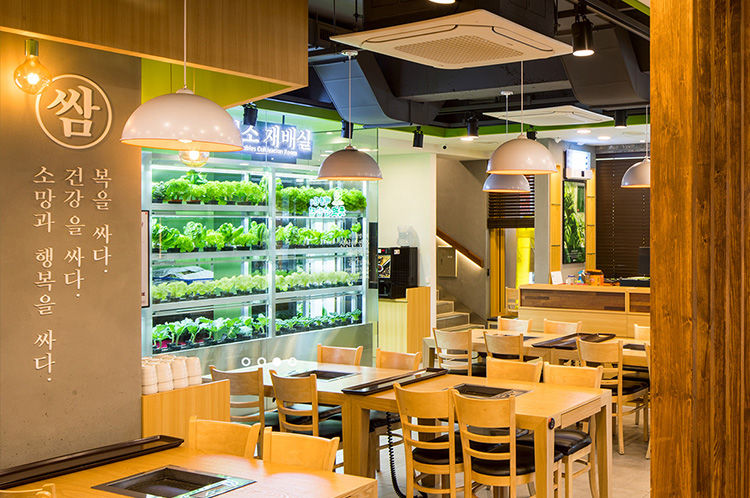
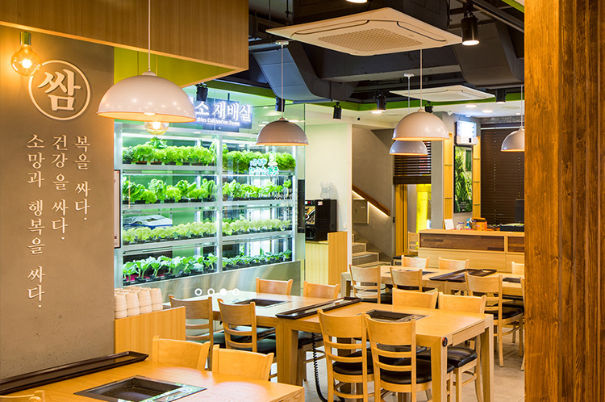
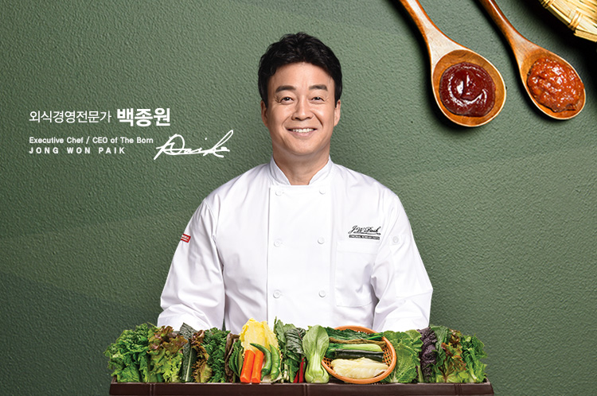
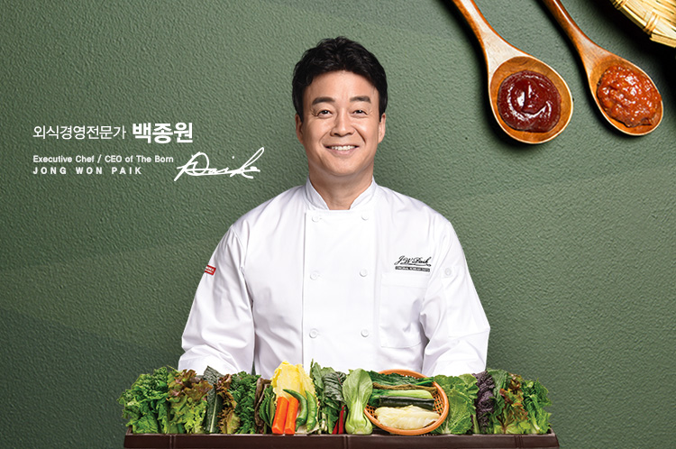

-
 

건강에 좋은 것이
자연에도 좋습니다.
인간과 자연을 함께 사랑하는
원조쌈밥집이 권하는
건강밥상.SINCE 1993 20여 가지 신선한 채소로 즐기는 건강한 한 상!
원조쌈밥집은 건강하고 푸짐한 쌈밥을 드리기 위해
항상 노력하고 있습니다. -
 

1993년
오픈부터 현재까지
건강하고 푸짐한
쌈밥을 드리기 위해
항상 노력하고 있습니다.SINCE 1993 20여 가지 신선한 채소로 즐기는 건강한 한 상!
원조쌈밥집은 건강하고 푸짐한 쌈밥을 드리기 위해
항상 노력하고 있습니다.
-
원조쌈밥집의
시작1993년 4월 고객들의 건강과 맛을 모두 만족 시켜 드리기 위한 설렘으로 원조쌈밥집이 첫 발을 내디뎠습니다. 20여 가지의 신선한 각종 쌈과 우연히 발견하게 된 원조쌈밥집의 대패삼겹살로 건강과 행복을 모두 느껴 보시기를 바랍니다.
자세히 보기 -
건강하고 푸짐한
쌈채소쌈을 싸먹는 것은 건강과 소망을 담은 음식이란 의미를 갖는 우리 선인들의 문화입니다. 원조쌈밥집은 신선한 쌈을 푸짐하게 드실 수 있도록 특별히 개발한 쌈채반에 담아 쌈을 제공합니다.
자세히 보기 -
원조쌈밥집의
메뉴가장 대표적인 쌈밥정식, 차돌박이와 함께 먹는 차돌쌈밥정식 그리고 원조쌈밥집에서만 맛 볼 수 있는 특제 쌈장인 해물쌈장까지 즐기실 수 있습니다.
자세히 보기
* 이 페이지는 기존에 있는 사이트를 카피하여 구현하는 방식으로,
비상업적인 포트폴리오 용도로 제작하였습니다.